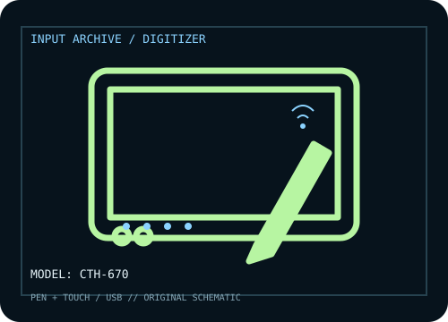

[ PEN TABLETS AND DIGITIZERS // IDENTIFIED COMPONENT ]
Wacom Bamboo Fun
Pen-and-touch Bamboo Fun digitizer; do not confuse the tablet with similarly named Bamboo generations.

MODEL IDENTIFICATION: Manufacturer model / identifier: CTH-670. Confirm the unit label, bundle contents, regional suffix, and revision against its product documentation before compatibility or repair work.
Model specifications
| Catalog subcategory | Pen tablets and digitizers |
|---|---|
| Exact model / SKU | CTH-670 |
| Active area | 216.5 × 137 mm (8.5 × 5.4 in) pen area on this medium CTH-670 model. |
| Pressure and pen technology | 1,024 pressure levels; cordless, battery-free electromagnetic-resonance pen. The CTH model also includes multi-touch input. |
| Resolution / report rate | Wacom’s Bamboo manual identifies model-family pen specifications; it does not state a report rate for CTH-670. |
| Interface | USB wired; optional Wacom wireless accessory kit was a separate add-on and is not assumed present. |
| Driver, OS and compatibility | The original Bamboo driver supports Windows and Mac OS X; current OS support depends on the legacy driver available for CTH-670. Check Wacom’s driver selector before connecting to a current system. |
| Power | USB bus-powered in wired use. A wireless accessory kit, if present, adds a rechargeable battery and receiver; identify it separately. |
| Calibration and service notes | Calibrate pen-to-display mapping in the Wacom driver and test touch gestures separately. Record whether the optional wireless kit is installed and functioning. |
Preservation and service notes
USB bus-powered in wired use. A wireless accessory kit, if present, adds a rechargeable battery and receiver; identify it separately. Calibrate pen-to-display mapping in the Wacom driver and test touch gestures separately. Record whether the optional wireless kit is installed and functioning.
Record the as-found model label, accessories, host OS, driver/firmware version, calibration state, and test method. Published capability does not guarantee compatibility with a particular application or individual used unit.
Manufacturer sources
- Bamboo user manual — WacomManufacturer manual covering Bamboo touch tablet setup, pen operation, and model-family identification.
- Drivers & software — Wacom (CTH-670 search)Manufacturer driver lookup for the CTH-670; legacy OS support should be confirmed by release notes.
Manufacturer product and support pages can change. Save the applicable manual/driver release notes and verify the exact model and revision at setup.